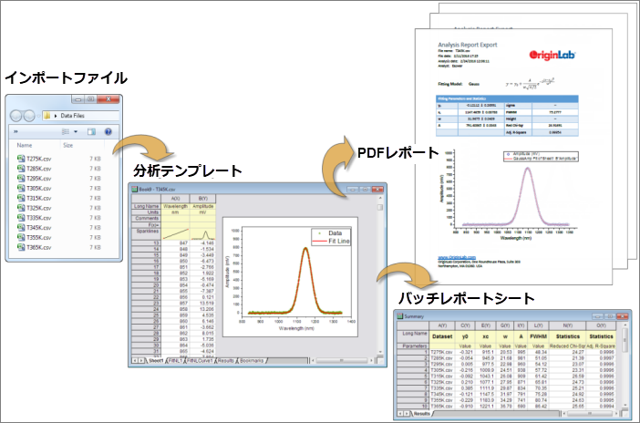
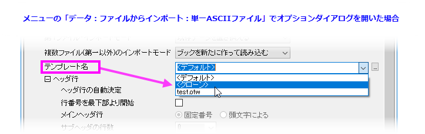
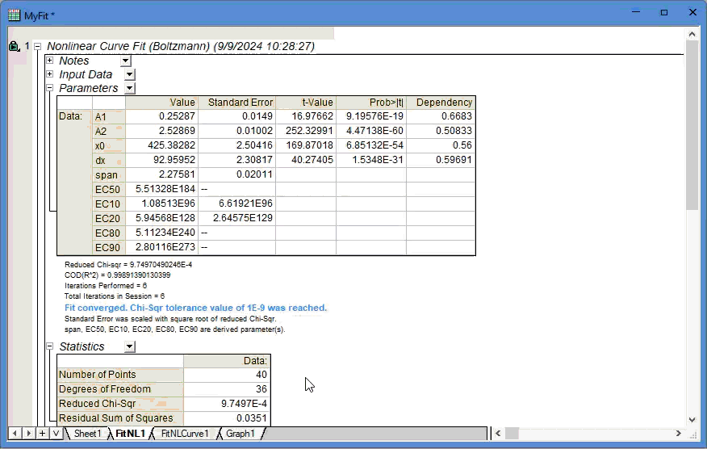
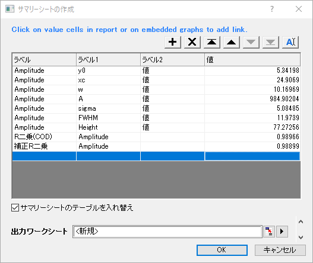

分析テンプレート
Analysis-Templates
はじめに
Originのワークブックは、データ、メタデータ、計算式、スクリプト、分析結果(グラフおよび行列を含む)を保存できます。複雑な情報を保持する機能と、Originの分析機能の再計算を組み合わせることで、分析テンプレートを作成することができます。
分析テンプレートのコンセプトは、OTW(U)ファイルとしてワークブックテンプレートを保存（ファイル：テンプレートの新規保存）するときすべてのデータが失われるという点で、Originのワークブックテンプレートのコンセプトとは異なります。一方で、いくつかの操作を実行し、分析テンプレートをOGW(U)ファイルとして保存（ファイル：ワークブックを分析テンプレートとして保存）すると、ブックには列とシートの数、列の属性と順序、フォーマットとスタイルオプションといった情報だけでなく、
実行した分析の種類と生成する出力の種類に関する情報もOTW(U)ファイルに保存します。適切なデータを与えると、分析テンプレートはデータを処理し、自動的にワークシートデータ、行列、テーブルとグラフを組み合わせた分析レポートシートの形式で出力します。解析テンプレートは、Originのバッチ処理に不可欠なアイテムとなります。

分析操作をテンプレートに保存
すべての分析操作が1つのワークブックに統合されている場合は、ファイル：ワークブックを分析テンプレートとして保存を選択して、ワークブックを分析テンプレート（*.OGW(U)ファイル）として保存できます。このOGW(U)ファイルをOriginに直接ドラッグして、開くことも可能です。関連するデーが全て消去されていますが、解析操作は緑色の鍵で表示されている通りに保存されています。
解析操作が行列ブックや独立したグラフウィンドウにも関連付けられている場合は、
- これらの行列ブック/グラフウィンドウを新しいシートとしてソースブックに追加し（Origin
2018b以降で可能）、ブックを分析テンプレートとして保存します。
- プロジェクト全体を分析テンプレートとして保存できます。保存されたプロジェクトは、新しいデータを追加する「テンプレート」になります。現在のプロジェクトをテンプレートとして保存するには、ファイル:
現在のプロジェクトのクローンを作成をクリックします。これにより、現在のプロジェクトファイルの全ウィンドウや操作を残したまま、インポートデータを消去して複製
します。プロジェクトファイルを開いた後変更されている場合は、クローン作成する前に、操作とグラフの編集内容をプロジェクトファイルに保存するように求められます。新しいUNTITLED.opjuが作成され、複製後すぐに開きます。
保存したテンプレートを使って、繰り返し処理
保存したテンプレートを使って別のデータセットを処理したいだけの場合、「ワークブックのテンプレート」は、「プロジェクトのテンプレート」と同じように機能します。いずれも、新規データをテンプレートにインポートして、グラフと結果に関連する全ての分析を更新します。
「ワークブックのテンプレート」を利用するメリットは、 バッチ処理ダイアログを使用できる点です。この機能は、ボタン をクリックするか、メニューからファイル:バッチ処理を選択し、複数ファイルまたはデータセットを自動で処理できます。
をクリックするか、メニューからファイル:バッチ処理を選択し、複数ファイルまたはデータセットを自動で処理できます。
繰り返し処理のテンプレートとしてアクティブワークブックを使う
1つのワークブック内でデータの1つを解析する場合、アクティブなワークブックからクローン化したワークブックにインポートして、全てのファイルで簡単に同じ解析ができます。この機能を使用する際は、各ファイルタイプのインポートダイアログでテンプレート名を<クローン>に設定します。

バッチ分析結果をレポート
分析結果をまとめてレポートするには、
- 表、グラフ、ロゴなどの外部の画像など、分析テンプレートを分析処理した出力要素のすべてのリンクを含むカスタムレポートシートを作成します。
あるいは、
- 分析テンプレートから得られた結果を事前カスタマイズしたWordテンプレートに直接出力することで、レポート用にWordまたはPDFファイルを作成することが可能です。
カスタムサマリーレポートシートを作成
解析結果を手動でコピーしてサマリーシートにリンクとして貼り付けする操作に加えて、Origin
2025ではインタラクティブで使いやすいツールにより、分析テンプレートにサマリーシートをすばやく追加できるようになりました。
- 解析操作を実行し、関連するシートをすべて1つのワークブックに集め、任意のワークシートタブを右クリックしてバッチ解析の要約シートを追加を選択します。

- サマリーシートの作成ダイアログが開いた状態で、通常のワークシート(ラベル行とデータ領域の両方)または階層レポートシート内の任意のセルをクリックします。するとセルの内容がコピーされ、ダイアログの値列にリンクとして貼り付けされます。クリックしたセルがレポートシートのセルの場合、対応するテーブルのヘッダがラベル列にリンクとして自動で貼り付けられます。複数のヘッダ行を持つテーブルの場合、各行は分離されたラベル列として抽出されます。
- 自動抽出されたラベルの他に、(1)ラベル列内をダブルクリックしてラベルテキストを手動で入力、(2)
 ボタンを使用してワークシートにあるラベルセルをインタラクティブに選択してコピーできます。
ボタンを使用してワークシートにあるラベルセルをインタラクティブに選択してコピーできます。
- レポートワークシートの埋め込みグラフや、シートとして追加されたグラフ、フローティンググラフといった各種グラフについても、クリックして選択できます。
- 連続するセルの場合は、ドラッグで選択し、一度に追加できます。

- テーブルの上部にあるボタンを使用して、新しい行の挿入、既存の行の削除、行の並べ替えができます。

|

|
選択した行の上に新しい行を挿入します。 |

|
選択した行を削除します。 |
 
|
行を並べ替えます。
/選択した行を一番上/一番下に移動;
/:選択した行を上/下に移動
|
|
ワークシートからラベルをコピーするには、このボタンをクリックします。このボタンをクリックすることでラベル選択モードになり、ワークシートのラベルセルを選択できます。すると、選択部分をコピーしてラベル列へのリンクとして貼り付けできます。
値列をクリックすると、ラベル選択モードがのままになります。 |
| サマリーシートのテーブルを入れ替え |
このチェックボックスにチェックを付けると、値がサマリーシートの各列に出力され、ラベルは列ラベル行に出力されます(最初のラベル列をロングネームに、残りをユーザ定義パラメータに出力)。
|
出力シート |
出力シートとして既存のワークシートが選択されている場合、バッチ処理の結果は、最後の空でない列(テーブルを入れ替えにチェックが付いている場合)に追加されるか、最後の空でない行(テーブルを入れ替えにチェックがついていない場合)に追加されます。 
|
|
- すでにサマリーシートを作成していて、後から値を追加する場合、バッチ解析の要約シートを追加で新しいシートを作成するのではなく、既存のサマリーシートに新しいアイテムを追加でき、出力ワークシートはデフォルトで概要に設定されます。
バッチ分析結果をWordテンプレートに出力する場合
あらかじめブックマークされたセルを持つWordテンプレートを準備する必要があります。ブックマークは、ファイル:分析テンプレートにWordブックマークを追加するを選択して分析テンプレートにWordブックマークを追加ダイアログを開くことで、ブックマークという名前の特別なワークシートの分析テンプレートに追加することができます。
Wordブックマークを介して分析結果をWordテンプレートに渡すには、分析テンプレートから結果をコピーし、Wordブックマークが追加されている対応セルへのリンクとして貼り付ける必要があります。完了したら、現在の分析テンプレートを再保存し、Wordテンプレートと一緒に使用することで、バッチ処理の結果をWordまたはPDFファイルに直接エクスポートできます。
サンプル
次の簡単な例で分析テンプレートについて説明します。
- 新しいOriginプロジェクトを開き、単一ASCIIのインポートボタンを
 クリックして、\Samples\Curve Fitting\Linear Fit.datを開きます。
アクティブワークシートウィンドウにファイルがインポートされます。 シートの名前はLinear Fitになります。
クリックして、\Samples\Curve Fitting\Linear Fit.datを開きます。
アクティブワークシートウィンドウにファイルがインポートされます。 シートの名前はLinear Fitになります。
- 列BからDまでを選択し、メニューから解析：フィット：線形フィットを選択して、線形フィットダイアログボックスを開きます。
- 再計算 を 自動に設定します。
- 初期設定のまま、OK をクリックして線形フィットを実行します。 表示されたメッセージには「いいえ」をクリックします。
- Linear Fitワークシート列の右側の灰色の領域で右クリックし、ショートカットメニューからワークシートのクリアを選択します。OKをクリックして、すべてのデータを削除します。
これによりLinear Fitデータに依存するすべての出力データがクリアされます（FitLinear1およびFitLinearCurve1シートをクリックすると確認できます）。この時点では、分析テンプレートはまだ保存されていません（タイトルなしのOriginプロジェクトファイルで作業していたにすぎません）。
必要に応じて、次の2つの保存オプションから選択します。
- 最小化された分析テンプレート（最小の機能単位であれば）を保存したい場合、および入力と出力のすべてをワークブック自体に含めることができる場合は、Originウィンドウファイルとして保存できます。
ファイル：ウィンドウの新規保存 (テンプレートの新規保存ではなく)を選択し、ワークブックをOGW(U)ファイルとして保存します。
- 分析テンプレートを、より複雑なプロジェクト（例えばワークブックとは別のグラフ、行列、またはレイアウトウィンドウを含むプロジェクト）に保存する場合は、ワークブックをプロジェクトファイルの一部として保存することができます。(ファイル：プロジェクトの新規保存）。
ただし、上記のようにワークブックをOGW(U)として保存した場合は、ファイル：開くメニューを使って、いつでもOriginプロジェクトファイルに追加できます。
- 保存するためのオプションを選択したら、単一ASCIIインポートボタンをクリックして、\Samples\Curve Fitting\Linear
Fit.datを再インポートすることで分析テンプレートの動作を確認できます。 ファイルがアクティブワークシートにインポートされ、フィットが実行されて、FitLinear
および FittedValuesワークシートに結果が出力されます。
アドバンスドユーザ向けの注意:分析テンプレートプロシージャがユーザ定義のXファンクションによって実行され、テンプレートをOGW(U)ファイルとして保存してから他のユーザと共有する場合、Xファンクションを作成時にオブジェクトで保存チェックボックス（Xファンクションビルダ>ツリービュー）にチェックを付ける必要があります。
|
その他